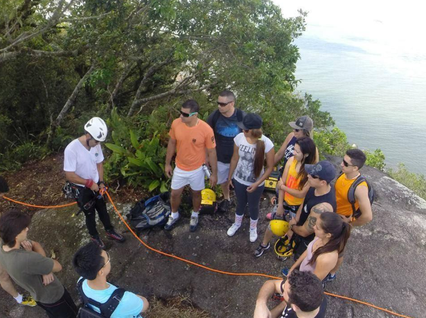
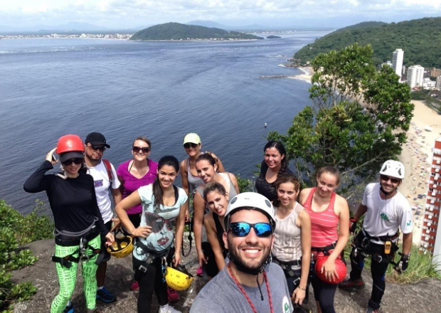
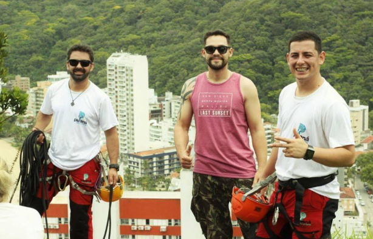

Detalhes do Roteiro
Esta é uma atividade indicada para iniciantes, exige pouco esforço físico, mas proporciona o sentimento inesquecível do que é Escalada e Rapel em rocha, deixando aquele gostinho de quero mais… Tombado em 1989, o Morro do Boi empresta seu charme à paisagem de Caiobá. É rodeado por algumas praias encantadoras, como a Praia Bela, a Praia Mansa, a Praia Brava e a Praia dos Amores.
Altura do Rapel
75 metros
Altura do morro
160 metros acima nível do mar.
Duração da atividade
4 horas
Tempo de Caminhada
30 minutos
Atividades de aventura
Caminhada, escalaminhada
Dificuldade
Leve/moderado
Limite de idade
Mínimo 10 anos, não tem limite máximo
Condicionamento Físico
Normal
Atrativos naturais
Mata atlântica, restinga, montanhas, trilhas
Galeria de Fotos


